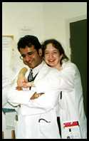
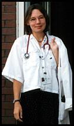
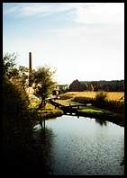
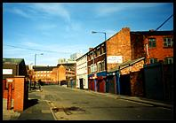

"Welcome to the 18.54 WAGN train service to Birmingham, calling at Cambridge, Ely, Peterborough"
It is Sunday evening and I have just said goodbye to Peter at Stansted airport. He's flying back to Luxembourg and I'm on my way back to slightly less cosmopolitan Walsall, just north of Birmingham, where I am working the infamous horrendous hours as a junior doctor in general medicine.
 We've actually just spent a weekend in Cambridge, chilling out in the excellent cafes, always on the lookout for good coffee and a sofa. I lived in Cambridge for about three months having moved from Maastricht, a town the size of Cambridge in the very south of the Netherlands, where I graduated from medical school now almost a year ago.
Gosh, it seems such a long time ago, just graduated, very very broke with huge student loans and desperately looking for a job in this country. It is in fact very difficult to find work as a junior doctor in Britain, unlike a few years ago, when almost every doctor in continental Europe moved to England to find a job.
Not any more though, so I spent long days waiting for the phone to ring and sending off at least ten application letters a week. I applied anywhere in the country and it wasn't until it was pointed out to me that Elgin, in Scotland, is further away from Cambridge than anywhere in the Netherlands that I started looking at the map before applying. Not that that stopped me though; I once had a job interview in Ayre, also in Scotland, which you can just get to and back from within 24 hours, provided the interview doesn't take too long and you don't mind getting up incredibly early.
Oh, I've been here before, the station, that is. In fact, it was on the evening before my very first job as a doctor! I remember ringing my mother from this station, asking her to look up Barnsley on the map, because that was where I was going to. I had received a phone call from one of the locum agencies, telling me to take the train to Leicester in 20 minutes time, change there to go to Sheffield, and change again to get to Barnsley in the middle of the night. I really didn't know what to expect, but fortunately didn't have time to worry about that either.
Anyway, Barnsley is a small and rather grotty industrial town between Sheffield and Leeds, and I did a locum in general medicine for five days in their district general hospital. I really can't remember much about it, just that it was the scariest experience in my life and that I have never been so desperate. Knowledge from six - nearly seven - years of medical school in the Netherlands seemed to have vanished entirely from my mind, which together with a basic complete ignorance of the English health-care system and the duties of a junior doctor must have made me a pretty bad locum.
 Before I had made my way to the ward that morning, my bleep went off, presenting me with the first GP to refer me his patient. (I have learned from experience that it is a fact of life that you are always on call on your first day.) This bleeping wouldn't stop all day and when someone finally took over from me at two in the morning I was completely exhausted, not having had time for food, a drink, a rest or even a pee! Somehow I made it through the other days, and the cheque at the end made it seem worth it: my first ever money earned as a doctor!
Oh, Nuneaton, that's worth a story! I had almost ended up working here, in a job that I wouldn't actually have wanted. This story will only work if I write it in phonetics, but alternatively you can read it out loud and find out that I really am not as dim as it might look like.
I got a phone call from the locum agency with fantastic news: they had found me a post in just the thing I wanted for 6 months! House officer in neurology. Fantastic! The post was available for only two days after my graduation so obviously it would be a bit of a hassle to sort things out, but still, neurology! So, was I interested to come over for a job interview? Was I? Of course I was!
Just for confirmation the details were faxed to me. It was very embarrassing to have to ring the agency the next day to tell them that I really was not interested in a job as a house officer in urology. In my defence, I had to repeat the phrases three times and actually spell it out before the misunderstanding was cleared up. Obviously not very good for your confidence if you're worried about speaking a different language anyway.
 Nearly there. Can't wait until next week, when I will be flying back to the Netherlands for the weekend. I never thought I would get home sick, since I have never really lived in place long enough to call it my home town. Besides, I was so fed up with living in Maastricht, where everybody knows everybody and you keep bumping into people that you'd rather avoid. But, I think I am starting to miss the Netherlands now, or at least, somewhere that I am feeling more at home than over here. Even though I have managed to speak like the English, dress like the English, eat chips with vinegar and drink tea with milk, watch Eastenders, and even start to like their coffee, I am still restless and desperately trying my best to fit in. So much for a cosmopolitan lifestyle.
Change here for Walsall, which means a 59 minute wait because - another fact of life - the train I want has always left one minute beforehand. For those who have never been to Birmingham New Street station, try and keep it that way, because this is a train station that is best to be avoided. I have started to like Birmingham though; it is possibly one of the best places in England to live in as a foreigner, because really, the only foreigners are the English. It is obviously not one of Britain's most picturesque places, but my favourite view from the train is still the canal with its narrow boats and the big mosque in the background. There is one reason however not to settle down in the Midlands: the weather. It always rains in Birmingham. Always.
 Yeah, home! Home? Yes, home! One look at my photos shows why it is excellent living and working here. I have made loads of very good friends and have a fantastic, although incredibly busy and exhausting, job. I don't think I would want to do the rest of my specialist training in this country, in fact, I know I am not going to, but I can recommend it to anyone for a true plunge in the deep end of a junior doctor's life!!
{kind=link}
{kind=link}
{kind=link}
{kind=link}